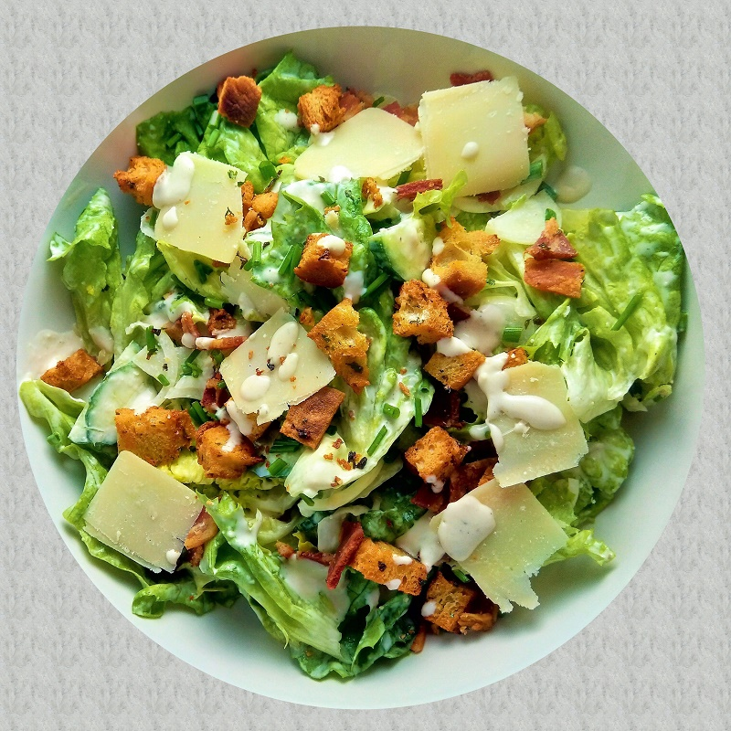

Ceasar Salad

Description
This is a recipe for fine ceasar salad. The recipes and portion sizes may vary. The ingredients are listed in the next paragraph and the steps for making the salad in the paragraph after.
Ingredients
To prepare ceasare salad you will need:
- 1/2 cup of extra virgin olive oil
- 4 cloves of garlic
- 1 baguette
- 1/4 cup of fresh lemon juice
- 4 ounces of Parmesan cheese
- 1 or 2 anchovies
- 2 eggs
- 1/4 teaspoon of freshly grounded black pepper
- 1/2 teaspoon of salt
- 4 to 6 small heads of romaine lettuce
Steps
Steps to prepare the ceasar salad:
- In a very large bowl, whisk together 1/2 cup olive oil and garlic. Let sit for at least half an hour.
- While the garlic is sitting, make the croutons. Spread the baguette slices out on a baking sheet. (You may need to do in batches.)
- Brush or spray with olive oil (or melted butter). If you want garlicky croutons, dip pastry brush in the garlic infused oil you have sitting in Step 1.
- Broil for a couple of minutes until the tops are lightly browned. (Note: do not walk away, these can easily go from browned to burnt.) Remove and let cool.
- The steps up until this point can be made ahead.
- Using your hands, tear off chunks of lettuce from the heads of romaine lettuce (do not use a knife to cut). Add to the dressing and toss until coated. Add the rest of the Parmesan cheese, and toss.
- Coarsely chop the toasted bread into croutons and add to the salad. Brush in any crumbs from chopping the bread, too. Toss and serve immediately.